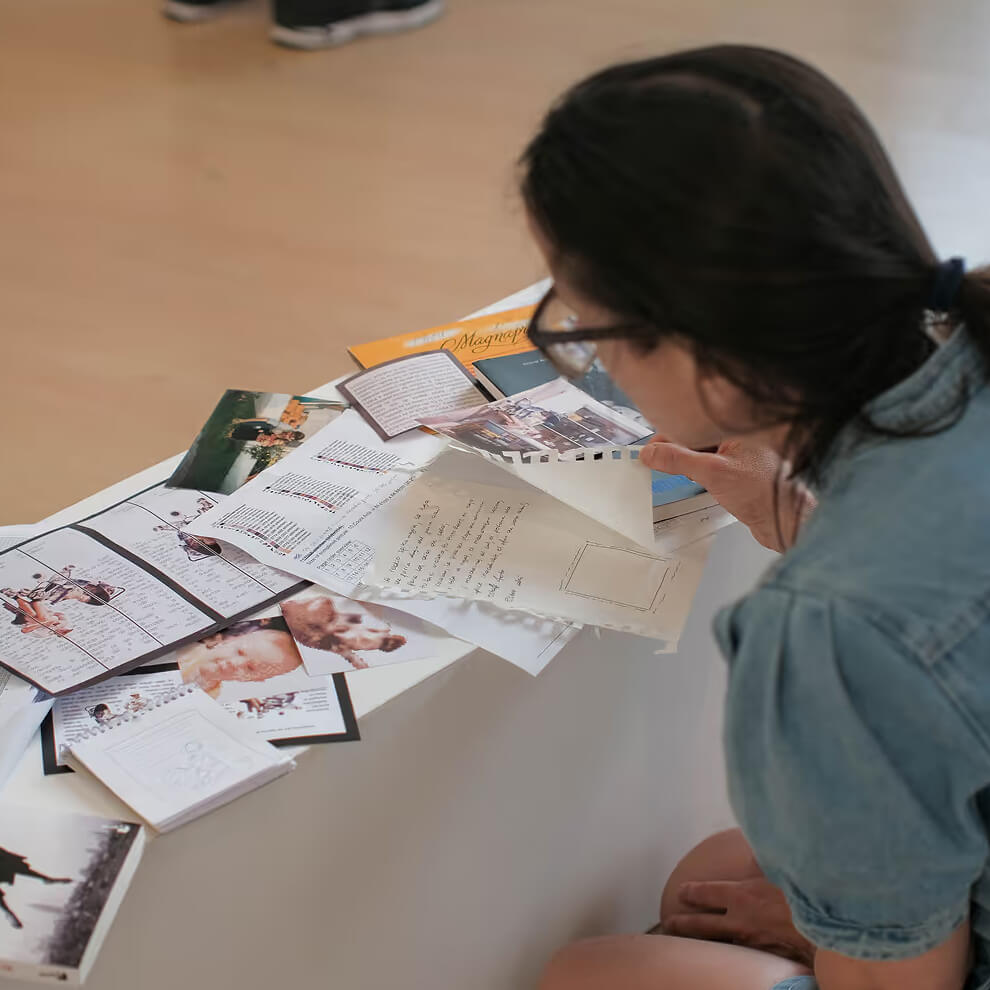
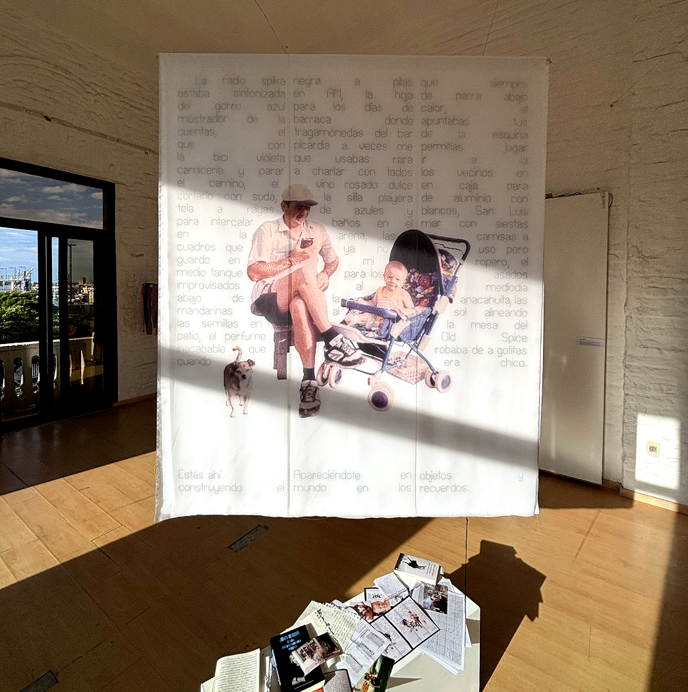

On memory pt. I
Embroiderying the memory
Size 120 x 150 cm
Materials Aida fabric, printed fabric, thread
Technique Petit point, photography
Year 2024 - Ongoing
On memory pt. I
Size 120 x 150 cm
Materials Aida fabric, printed fabric, thread
Technique Petit point, photography
Year 2024 - Ongoing
Buckle up

On August 2023, when I was leaving the ICU after seeing my father in a coma for the third or fourth day, my mind wandered to some strange places. I thought these were the last times I’d see him, and it was a grim image, empty of life. It frustrated me a little that this would be my last memory of him. Suddenly I thought I needed to embroider the objects and images that remind me of him, to give more RAM space to the bright memories, to the moments we shared, to celebrating him. To remember that those things also happened.
I wanted to embroider those things because of the connection embroidery creates with images, with the subject being stitched, after spending days bringing it to life, stitch by stitch. I remember the poem by Idea Vilariño that I embroidered years ago, and that poem never left me.
Anyway, that’s my idea. Now that I’m emerging a bit from the swamp of pain and shock, I want to dedicate time to reconstructing our memory. My first vision of this was to create a collage of various cross-stitch pieces of objects I come across daily that remind me of my father, and also to embroider a photo of him and me from my childhood that I really love. It took me a while to be able to look at that photo. When he passed, I wanted to go through my childhood photo albums, but it took me months to gather the strength to do it. When I finally did, it was what a moment—painful, but also full of beautiful memories. And that photo is just… beautiful.
After playing with this idea for a while, I realized it was quite labor-intensive. Translating many objects into cross-stitch, embroidering them, creating that collage, etc. So I started thinking about how I could turn this into a single piece that synthesizes everything I want to capture about memory, grief, and beyond. That’s how the idea of a kind of tapestry came about.
At first, I thought about embroidering the entire photo, but then I told myself that was too many stitches. So I considered embroidering isolated figures in the center, and I liked that. But it still felt like something was missing, and I thought words could tie everything together. After all, I like expressing myself through writing (isn’t this long text proof of that?).
Through sketching and iteration, I landed on the idea of embroidering both sides of a piece of fabric. One side would be its own front, but also the reverse of the other. One side would have a text, and the other an image. From the image side, I’d see traces of the text; from the text side, I’d see the silhouette of the image. That felt powerful to me: on one side, the image/photo/object, and on the other, the memories/feelings/meanings. That back-and-forth I live in—coming across objects and thinking of memories, thinking of memories and recalling objects. I even imagined some threads extending from a word and continuing into the photo, connecting one side to the other.
And that constant cycle of living with the dead through the ebb and flow of memory—it feels like a beautiful way to keep him present, and something I hope never fades within me. That’s why I also see this as a personal ritual: weaving memory, giving it attention, building him up in my mind, and gathering it all into a little monument of thread. A ritual to never forget.


My first goal was to be able to finish this by the end of 2024, so I'd be able to present it at Nuevo Reino's 2024 Portal (the group exhibition from the annual collective I attend). One reality check later: I didn't have the time to do so. But after a quick meltdown I realized presenting this as a WIP was also powerful. After all, this is really a memory in reconstruction, so showing a glimpse into the process was also faithful to this work. For this, I had already embroidered the text on one side, but the embroidered photography was missing on the other. So I used a printed translucent fabric with the picture to be stitched: like a building facade on restoration. Alongside this, I put some of the process material on display: sketches, notes, books, photos, patterns.



Hopefully 2026 might be the year I can finish this piece. This little monument. Until then this shall be a memory in reconstruction, among many more which won't get to be stitched together like this, but will be rebuilt in myself nonetheless.
...
"Until then, I had only been able to experience pain, not grief. Pain was passive. Pain happened. Grief, the act of managing that pain, required attention. Until that moment, there had been urgent reasons to erase any attention I might have given it, to banish the thought, to provide new adrenaline with which to face the daily crisis."
Joan Didion, The Year of Magical Thinking